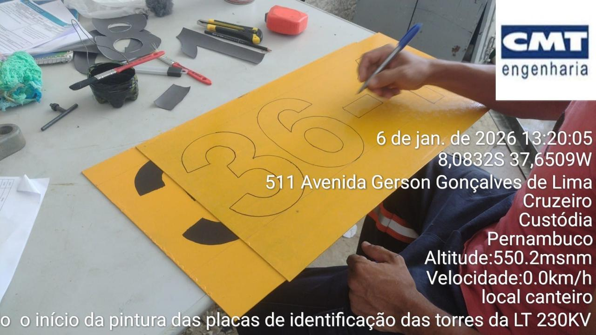
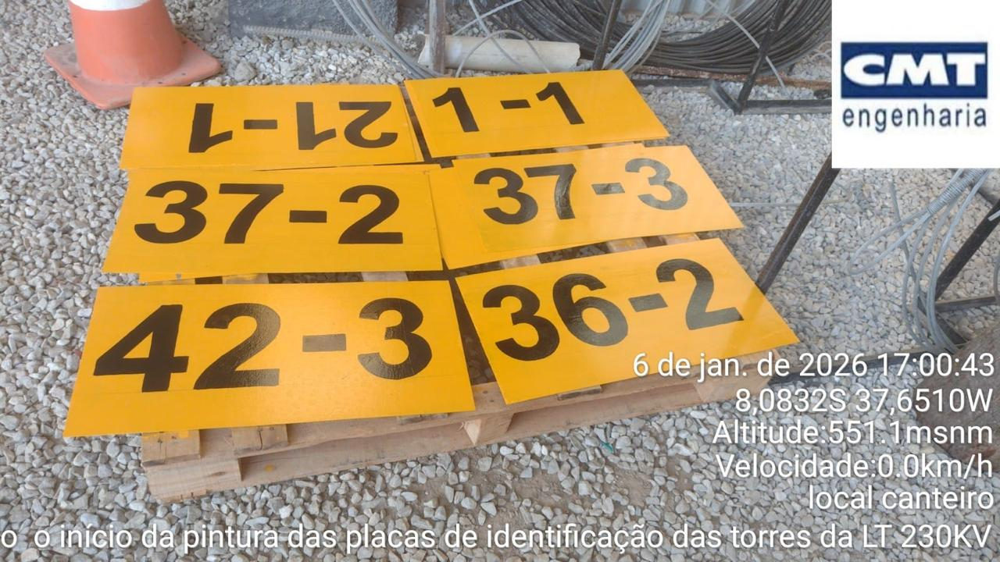

Pintura e reposição de placa de zinco

pintura na cantoneira

marcação e corte do zinco

pintura dos algarismos

resultado final

quantitativo de placas faltantes por trecho

placas faltantes por tipo de estrutura e por eixo